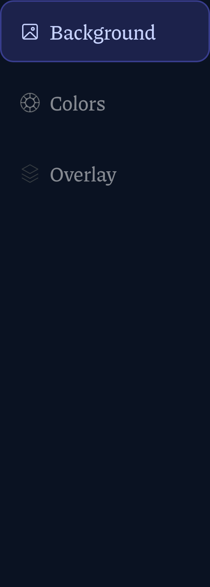
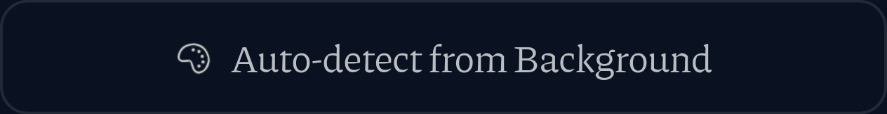
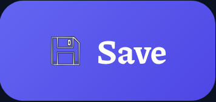
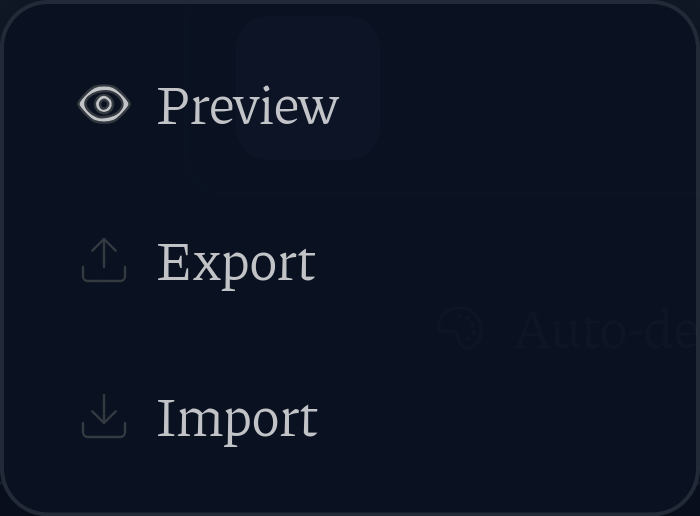
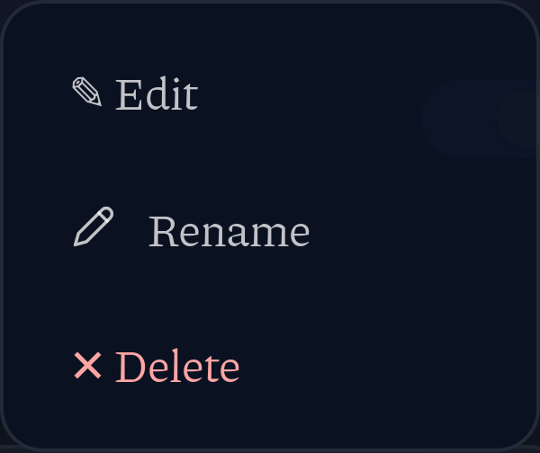

Sidebar: Background (picture) + Colors (wheel) + Overlay placeholder

Auto-detect from Background (palette)

Editor Save (floppy)

Footer menu: Preview (eye) + Export/Import placeholders
Fullscreen exit bar (bolt)

Row menu: Rename (pencil) + Edit/Delete glyphs
Custom theme active badge (palette)